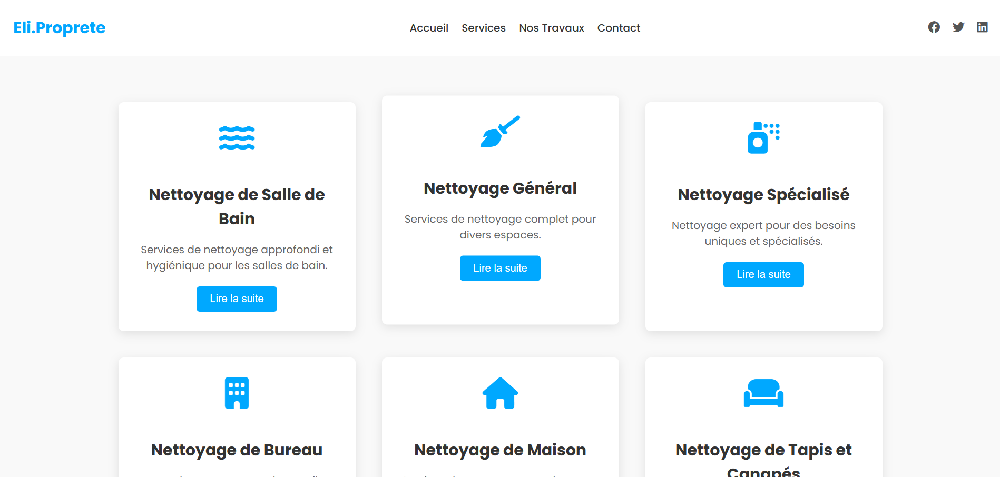
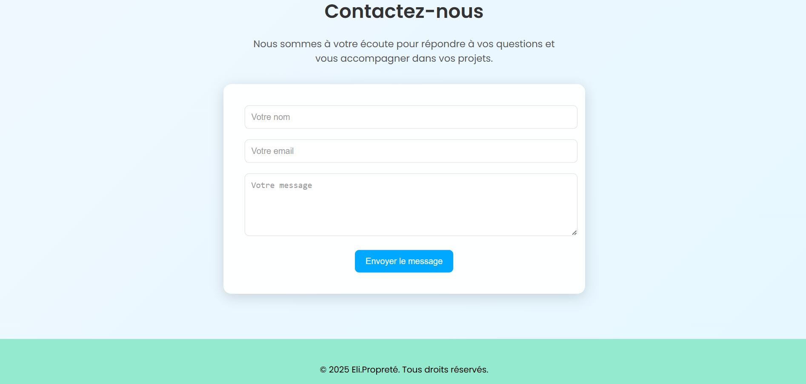

[IMG_01] :: CLIENT_FACING_PORTAL

[IMG_02] :: DYNAMIC_SERVICE_CATALOG

[IMG_03] :: ADMIN_KERNEL_DASHBOARD
Engineered a centralized business operating system. Beyond a service website, this deployment handles high-integrity booking transactions, staff scheduling, and a secure administrative kernel for business intelligence.


The challenge was to replace a fragmented manual booking process with an automated, highly available system. This solution focuses on atomic consistency in scheduling—ensuring that labor allocation never conflicts across different geographic service zones.
The backend leverages a normalized MySQL schema, with all ingress points protected via strictly parameterized queries and multi-layered server-side validation to mitigate injection and XSS vulnerabilities.